Quên ngày giỗ một lần là áy náy rất lâu. Bạn có từng nhớ lịch dương một cách rành rọt nhưng lại quên bẵng mất một ngày lễ âm lịch quan trọng hay sinh nhật ông bà không?
Nếu nhu cầu chính của bạn là không quên ngày giỗ, ngày lễ âm lịch và các việc cá nhân lặp theo lịch âm hoặc dương, thì phần lớn app phổ biến hiện nay lại đang quá ôm đồm, nghiêng về "siêu ứng dụng" xem tử vi và phong thủy. Dưới đây là danh sách 5 ứng dụng nhắc lịch âm đáng thử nhất, xếp hạng theo đúng tính năng nhắc việc, sự đơn giản và độ ổn định trên màn hình.
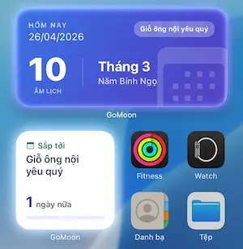
Tải GoMoon để nhắc ngày giỗ theo lịch âm
Nhắc đúng ngày âm hoặc dương • Widget ngoài màn hình • Nhập một lần, nhắc mãi
Tải GoMoon miễn phí1. GoMoon - Giải pháp tối giản, riêng tư hàng đầu
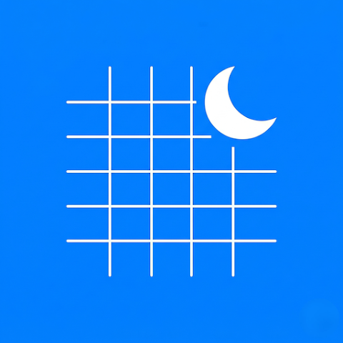
GoMoon
GoMoon đứng đầu danh sách nếu mục tiêu của bạn là phục vụ đúng nhu cầu "nhắc lịch âm mà không bị rối". Điểm mạnh nhất của ứng dụng nằm ở trải nghiệm tập trung vào một việc: nhập sự kiện một lần, nhắc theo lịch âm hoặc dương mãi mãi.
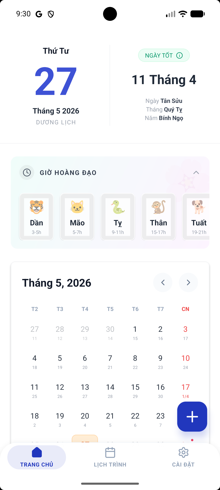
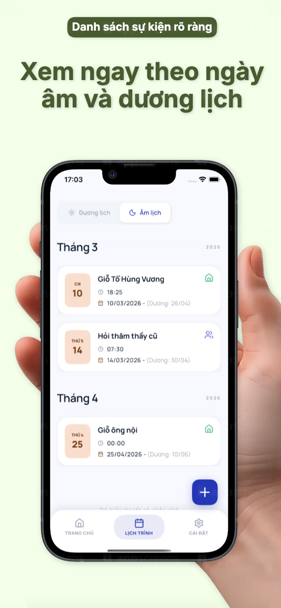
- Có Widget xem sự kiện ngoài màn hình chính và màn hình khóa tuyệt đẹp.
- Chuyển đổi âm dương, xem giờ tốt nhanh chóng.
- Hoàn toàn riêng tư: Dữ liệu lưu trên máy, không thu thập thông tin người dùng.
- Không có quảng cáo gây khó chịu.
- Ứng dụng còn khá mới nên ít tính năng mở rộng (tử vi, bói toán).
2. Lich Van Nien - Lịch VN 2026
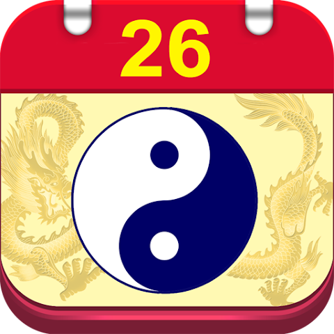
Lich Van Nien - Lịch VN 2026
Đây là đối thủ đại chúng mạnh nhất trên Android với độ phủ hơn 5 triệu lượt tải. Ứng dụng cung cấp hệ thống nhắc sự kiện trước 3, 7, 10, 15 ngày rất chi tiết.
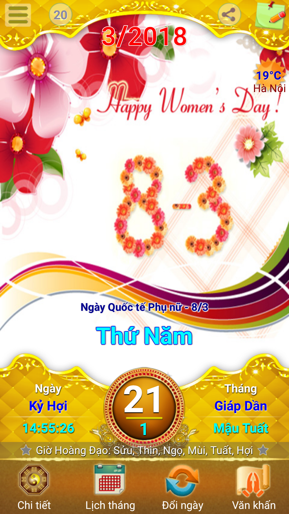
- Độ phủ lớn, cực kì nhiều tính năng như thời tiết, nhịp sinh học, văn khấn.
- Hệ thống nhắc nhở mạnh mẽ, ghi chú theo cả âm/dương.
- All-in-one nên khá nặng và rối với người dùng chỉ muốn nhắc lịch âm.
- Mật độ quảng cáo dày đặc có thể làm giảm trải nghiệm.
3. Lịch Như Ý - Vạn Niên 2026
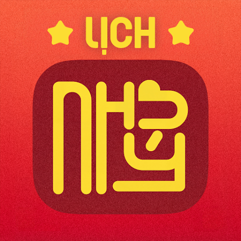
Lịch Như Ý - Vạn Niên 2026
Đứng ở vị trí thứ ba là Lịch Như Ý. Ứng dụng này có độ nhận diện thương hiệu khá tốt và tích hợp lớp tính năng nhắc nhở sự kiện, sinh nhật.
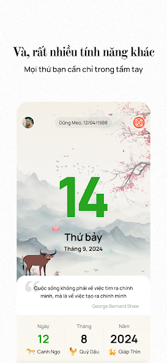
- Hệ sinh thái nội dung phong thủy sâu sắc, xem ngày tốt chi tiết.
- Đồng bộ lịch với tài khoản Google.
- Quá nghiêng sang phong thủy và tử vi, làm lu mờ tính năng nhắc lịch cốt lõi.
- Từng có phản hồi về lỗi widget trên iOS.
4. Lịch Việt 2026 - Lịch Âm Dương
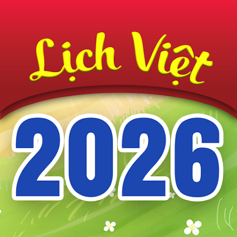
Lịch Việt 2026 - Lịch Âm Dương
Lựa chọn khá cân bằng với giao diện hiện đại, tính năng đếm ngược ngày lễ rõ ràng. Phù hợp với người thích theo dõi lịch tháng và các dịp đặc biệt.
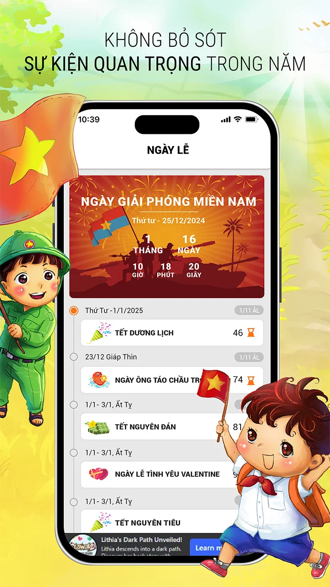
- Giao diện đẹp mắt, bộ đếm ngược ngày lễ (countdown) thông minh.
- Widget tùy biến sâu.
- Cộng đồng người dùng iOS công khai chưa lớn bằng các tên tuổi khác.
5. Nhắc Ngày Giỗ
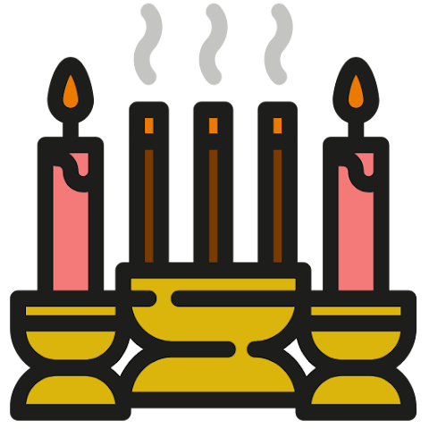
Nhắc Ngày Giỗ
Ứng dụng ngách đánh đúng vào "pain point" cốt lõi của người Việt: ghi nhớ các ngày giỗ gia đình và mời khách.
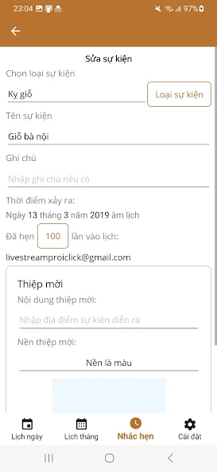
- Tập trung 100% vào việc nhắc giỗ, tạo thiệp mời online.
- Một lần nhắc cho cả 100 năm.
- Giao diện cũ, ít được cập nhật (lần cuối từ 11/2023).
- Chưa hỗ trợ tốt widget ngoài màn hình.
Bảng so sánh nhanh các tính năng
| Ứng dụng | Nền tảng | Kiểu nhắc nhở chính | Widget màn hình | Quảng cáo & Dữ liệu |
|---|---|---|---|---|
| GoMoon | iOS, Android | Giỗ, sự kiện âm/dương, cá nhân | Có (Khóa & Chính) | Lưu máy, Không QC |
| Lich Van Nien | Android | Sự kiện, nhắc trước 3/7 ngày | Có | Có quảng cáo |
| Lịch Như Ý | iOS, Android | Sự kiện, sinh nhật | Có (từng lỗi ở iOS) | Thu thập tài khoản |
| Lịch Việt 2026 | iOS, Android | Countdown lễ, thông báo | Có | Có quảng cáo |
| Nhắc Ngày Giỗ | Android | Ngày giỗ 100 năm | Không rõ | Yêu cầu tài khoản |
Tổng kết
Thị trường có rất nhiều "siêu ứng dụng" lịch vạn niên nhồi nhét phong thủy và tử vi, nhưng nếu bạn thuộc nhóm người dùng chỉ cần một công cụ **sạch sẽ, nhanh chóng, có widget đẹp và tập trung hoàn toàn vào việc không quên ngày giỗ**, thì GoMoon chính là lựa chọn hoàn hảo nhất.